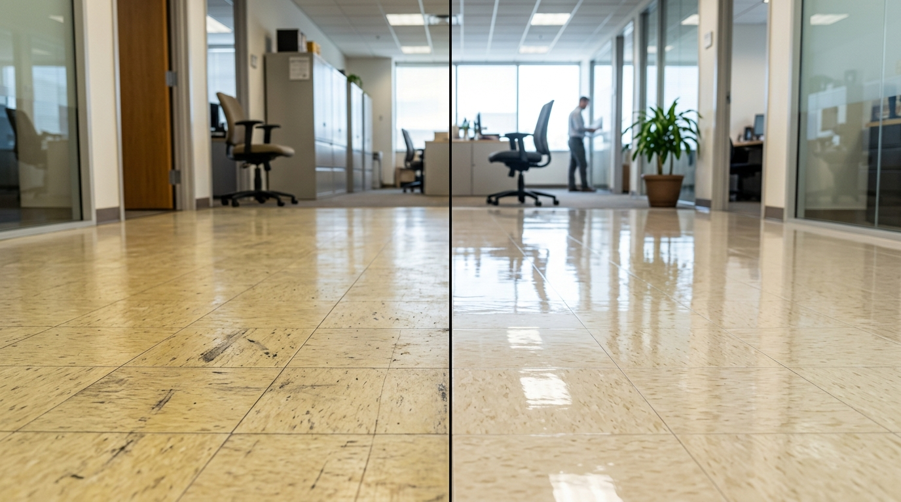
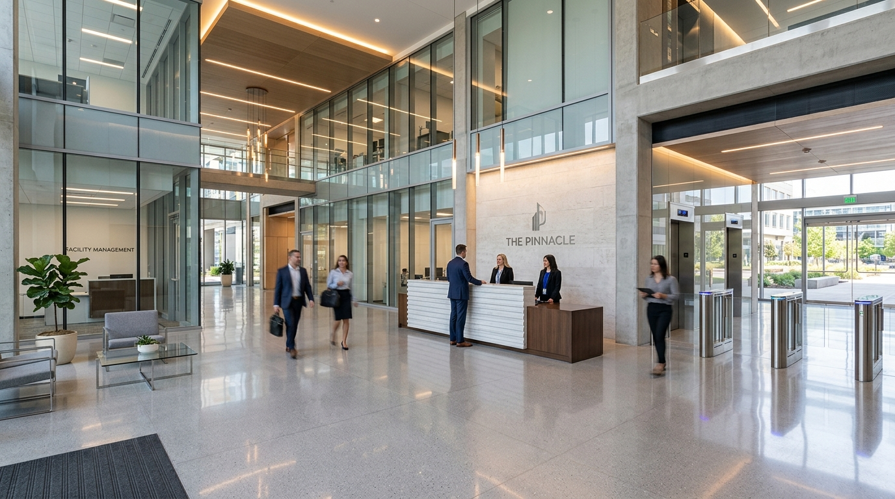

One standard of clean. Eight scopes of work.
Every industry below gets a scope of work built for how that space is actually used — not a generic cleaning plan with the address swapped out. Pick your building type to see what's included.

What's included, across every account.
Click any service below to explore the exact scope of work, protocol standards, and facility equipment provided by our vetted W-2 team.
Daily Janitorial & Day Porter Service
Nightly or daytime turnover — trash removal, restroom sanitation, common areas, and high-touch surface disinfection.
Full Routine Maintenance & Day Porter Support
Tailored for high-traffic corporate offices, government buildings, and commercial facilities. We maintain an immaculate environment with zero disruption to your workflow.
- ✓Restroom Care: Complete sterilization of fixtures, partitions, mirrors, and continuous restocking of paper products and soap.
- ✓High-Touch Disinfection: Door handles, light switches, elevator buttons, handrails, and shared desks.
- ✓Waste & Recycling: Daily emptying and relining of all interior trash, compost, and confidential bins.
- ✓Supervised Audit Trail: Shift completion logged digitally with scheduled supervisor quality walkthroughs.

Deep & Detail Cleaning
Periodic deep cleans covering workstations, baseboards, vents, appliances, and hard-to-reach commercial surfaces.
Comprehensive Surface Restoration & Sanitization
Designed for quarterly, bi-annual, or post-event deep sanitization to remove embedded grime, dust buildup, and hidden allergens.
- ✓High & Low Dusting: Ceiling diffusers, HVAC return vents, light fixtures, architectural molding, and baseboards.
- ✓Breakroom & Kitchenette Deep Scrub: Interior/exterior microwave, refrigerator detailing, and degreasing.
- ✓Upholstery & Partition Care: Fabric vacuuming, stain spot treatment, and acoustic panel dusting.
Floor Care & Restoration (VCT, Carpet & Tile)
High-gloss VCT strip & wax, commercial hot-water carpet extraction, and concrete machine burnishing.
Advanced Commercial Floor Preservation
Protect your high-traffic flooring investment with multi-coat acrylic polymer seals and deep steam extraction scheduled around your operating hours.
- ✓VCT Strip & Wax: Complete removal of yellowed, scuffed wax followed by 4+ coats of high-solids slip-resistant finish.
- ✓Carpet Steam Extraction: Deep pile agitation, hot water extraction, and quick-dry industrial air movers.
- ✓Tile & Grout Machine Scrub: High-pressure acid-free emulsification to restore discolored grout lines.

Disinfection & Infection Control
EPA List-N hospital-grade disinfectants and HEPA filtration for medical facilities, dental clinics, and wellness centers.
Healthcare-Grade Sanitization Protocols
Strict clinical cross-contamination prevention designed to meet CDC, OSHA, and California Department of Public Health guidelines.
- ✓EPA List-N Chemical Efficacy: 10-minute dwell time validation for broad-spectrum pathogen neutralization.
- ✓Color-Coded Microfiber Protocol: Strict room-specific cloths preventing cross-contamination between areas.
- ✓HEPA Filtration: 99.97% microscopic particulate capture on all vacuum and air filtration equipment.

Window & Architectural Glass Cleaning
Streak-free interior partitions, exterior ground-floor storefront glass, entrance vestibules, and conference enclosures.
Crystal-Clear Interior & Perimeter Glass
Eliminate fingerprints, smudges, hard water spots, and dust from corporate conference glass, glass railings, and storefronts.
- ✓Deionized Water & Squeegee: Streak-free, mineral-free clarity without film or residue.
- ✓Frame & Sill Detailing: Complete wiping of rubber gaskets, track cleaning, and cobweb removal.
- ✓Scheduled Maintenance: Weekly, bi-weekly, or monthly recurring exterior and interior rotations.

Post-Construction & Move-In Cleanup
3-phase rough, final, and touchup cleanup after commercial tenant buildouts, office remodels, and civic renovations.
Turnover-Ready Facility Commissioning
Remove fine drywall dust, adhesive stickers, grout haze, and paint overspray so your facility passes inspection and is 100% ready for occupancy.
- ✓Phase 1 (Rough Clean): Bulk debris clearing, packaging disposal, and initial dust extraction.
- ✓Phase 2 (Final Detail): Complete fixture polishing, glass sticker removal, floor scrubbing, and cabinet sanitization.
- ✓Phase 3 (Move-In Touchup): Final wipe down right before executive move-in or grand opening inspection.

Scope of work, by building type.
Corporate & Class A Offices
Elevate the professionalism of your workspace with detailed cleaning tailored to corporate standards. We maintain spotless executive suites, open floorplans, conference rooms, and common break areas with zero disruption to your daily operations.
- Workstation dusting, high-touch disinfection, and sanitized tech hubs
- Streak-free conference glass, polished surfaces, and spotless kitchens
- Quiet daytime porter or seamless after-hours keycard service
Medical & Clinical Facilities
Hospital-grade disinfectants and stringent sanitation protocols for clinics, urgent care centers, and dental practices. We protect staff and patients with infection prevention that exceeds compliance requirements.
- EPA-registered hospital disinfectants and terminal surface cleaning
- Color-coded microfiber cross-contamination prevention protocol
- HEPA vacuum filtration and certified bio-waste touchpoint sanitization
Industrial, Warehouse & Logistics
High-bay logistics distribution centers and manufacturing plants require specialized floor care machinery and safety protocols. We keep floors clean and hazard-free without interrupting shipping schedules.
- Ride-on floor scrubbing, concrete polishing, and aisle degreasing
- Loading dock, staging zone, and employee welfare area sanitation
- OSHA-compliant dust control and waste management
Retail & Showroom Environments
First impressions directly impact customer retention. We ensure your storefront glass, entrance lobbies, sales floors, and fitting rooms are immaculate before the doors open each morning.
- High-gloss floor care, daily buffing, and entrance mat vacuuming
- Crystal-clear display glass, mirror detailing, and fitting room hygiene
- Early morning or late-night turnover cleaning
Property Management & Multifamily
Reliable common-area upkeep for residential towers, apartment communities, and HOA portfolios that keeps tenant satisfaction and building asset value high.
- Grand lobby maintenance, elevator cab polishing, and package room upkeep
- Corridor vacuuming, stairwell sanitization, and fitness center disinfection
- Move-out/turnover deep cleaning packages

Education & School Districts
Safe, non-toxic, and rigorous cleaning built around the academic calendar. We keep classrooms, hallways, cafeterias, and gymnasiums healthy and sanitized.
- Green Seal certified, child-safe cleaning chemistry
- High-traffic locker and corridor floor scrubbing & waxing
- Flexible coverage for term breaks, deep summer resets, and district events

Financial Institutions & Bank Branches
Secure, trustworthy cleaning for bank branches, credit unions, and corporate headquarters requiring vetted staff, security clearance, and discreet after-hours service.
- Background-checked and bonded janitorial technicians
- Marble and terrazzo floor polish with high-gloss finish
- Strict adherence to perimeter security and alarm protocols

Government & Public Buildings
City halls, courthouses, transit hubs, and public works facilities serviced by a certified Women-Owned Small Business (WOSB) with active SAM.gov registration.
- NAICS 561720, CA Small Business Certified, SAM.gov active
- Prevailing wage compliance and digital audit trail service logs

Get a free Facility Walkthrough & Cleanliness Score.
Not sure how your current cleaning vendor stacks up? Prime Clean will walk your facility in person and leave you with a written Cleanliness & Compliance Score — no sales pitch, no obligation. It naturally leads into a written quote if you'd like one.
Already have a cleaning vendor? That's exactly who this is for.